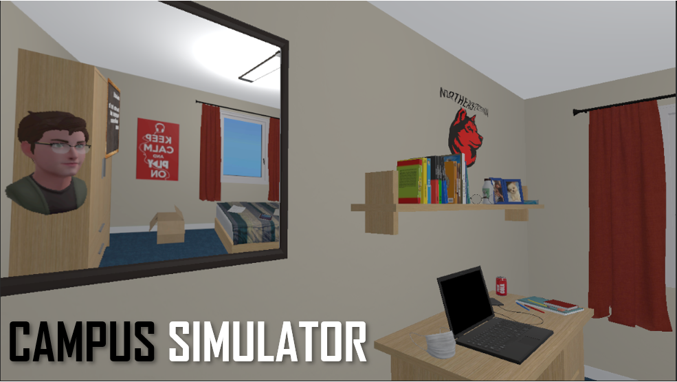
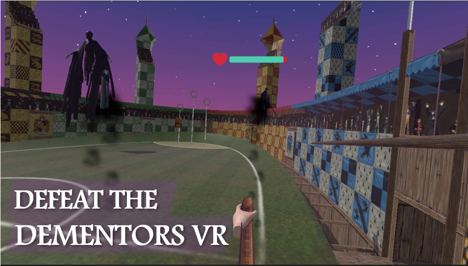
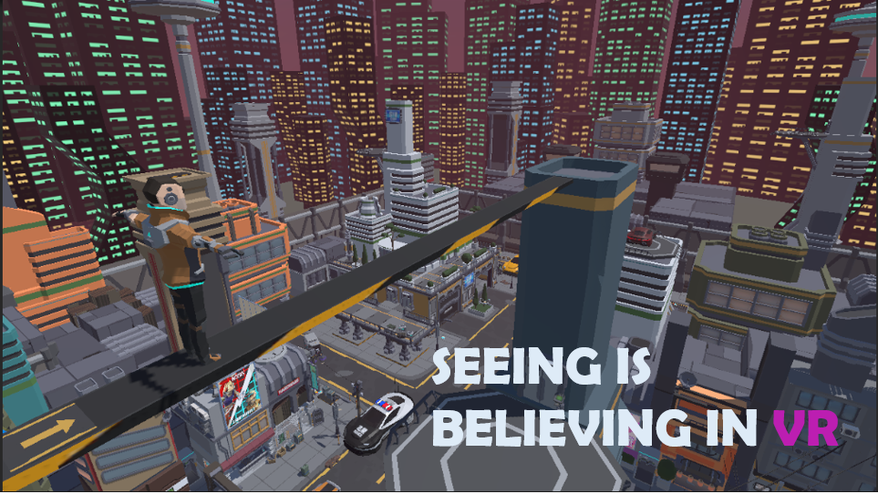
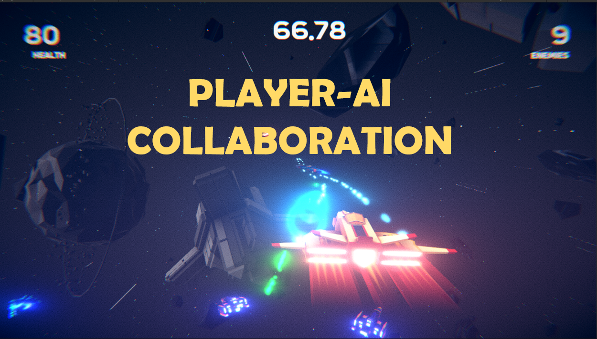
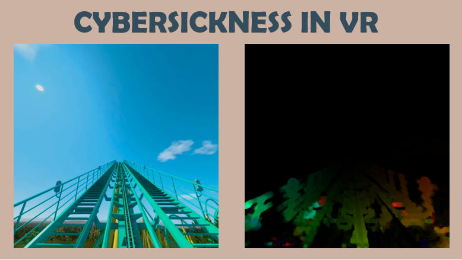
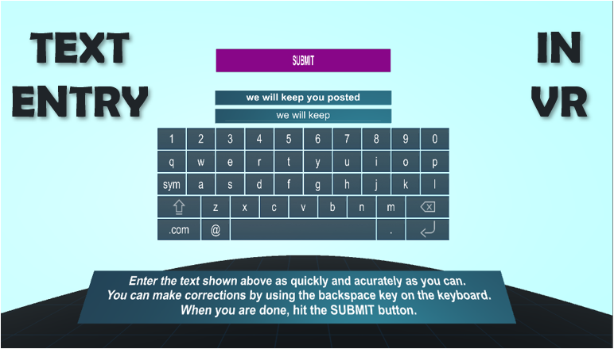
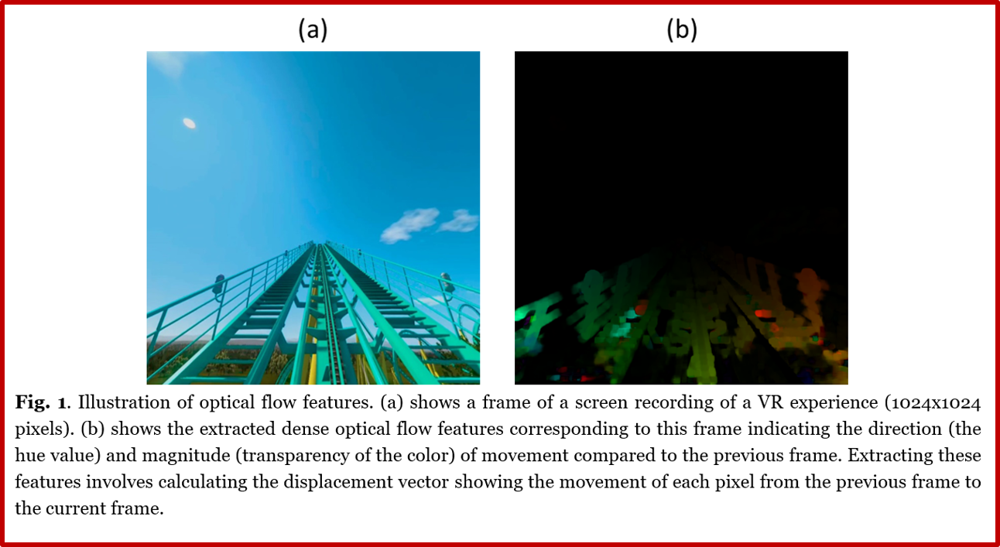

This portfolio features some of the mixed reality (XR) applications I have developed and some of my recent research projects at the intersection of HCI and XR.
Portfolio






About
If you would like to learn more about my teaching, research, and publications, please visit my personal website.
This is a prototype VR-based serious game that I developed to teach Northeastern students about CDC guidelines on how to return to the campus during the COVID-19 pandemic.
DementorsVR Game
This is a Harry Potter-themed VR game that I use to teach the fundamentals of VR game development in Unity.
I also developed a desktop version of this game, which is designed as an FPS game.
I use this game when teaching game AI in my game programming classes. Here is a quick demo of this version:
I use the same concept for teaching AR gaming. Here is a demo of the AR version of this game:
Seeing is Believing in VR
This is a VR demo I made to illustrate how the visual system dominates our perception of reality. In the demo, the task is simple: walk over to the other side without falling off. Because of the visual cues indicative of high buildings (i.e., height), most users end up trying to balance themselves by raising their arms to each side and find it difficult to override the visual feedback provided by the virtual environment. The demo is fun to show/watch in classes as we get to observe how people hesitate while walking even though they know they are in a physical room and cannot fall off!
Player-AI Collaboration
I developed this game for one of my ongoing research projects, whose goal is to investigate the effect of virtual embodiment and expressiveness on players’ trust in AI agents during gaming. The game features an intelligent conversational agent that provides guidance based on the player’s performance and moves during the game. The goal is to compare a voice-based (as shown in the video) and an embodied agent (the agent is represented with a virtual avatar) and determine the extent to which they affect players’ perception of their collaboration with the AI agent.
Also related to this project is the following one where the goal is to develop virtual agents that can mirror the facial expressions of a user on the basis of webcam feed. I developed this application using OpenCV, BlazeFace, and Unity 3D.
Cybersickness in VR

This project seeks to quantify the nauseogenicity (i.e., the tendency to cause cybersickness) of VR experiences using the optical flow features of the VR content. The project offers a novel approach that requires no additional tracking devices or physiological sensors, which can be expensive and not scalable to real-life contexts, and instead capitalizes on the visual properties of a VR experience and extracting corresponding features to measure the amount of visual cues provided by the VR experience to generate an illusion of motion in the virtual environment. These optical flow features (i.e., patterns of apparent motion cues) convey a sense of vection (locomotion in the virtual environment) and can then be used as objective markers of cybersickness. The project seeks to develop a deep learning framework to quantify the nauseogenicity of VR experiences using the in-game optical flow features.
Text Entry in VR
This project illustrates one line of my research into 3D interaction in VR, focusing on text entry in VR. I developed a VR keyboard application to investigate the effect of various factors, such as UI layout and multimodal feedback, on text entry performance in VR. I use this application in my research studies, some of which have been published and can be viewed under my publications.